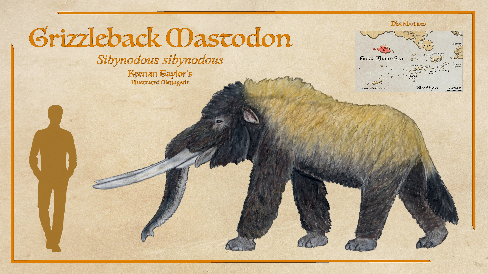

Scientific Classification
| Kingdom | Animalia | Animalia | Animalia |
|---|---|---|---|
| Phylum | Chordata | Animalia | Animalia |
| Class | Mammalia | Animalia | Animalia |
| Infraclass | Placentalia | Animalia | Animalia |
| Order | Carnivora | Animalia | Animalia |
| Suborder | Feliformia | Animalia | Animalia |
| Family | Felidae | Animalia | Animalia |
Taxonomic note: This is a simplified reference classification. The placement of individual Kaimeran lineages should be documented separately where their evolutionary relationships remain uncertain.
01 · INTRODUCTION
Overview

Felids are specialized predatory mammals characterized by powerful forelimbs, flexible bodies, keen senses, and dentition adapted for a carnivorous diet. Across their evolutionary history, members of the family have developed markedly different body sizes, hunting strategies, and habitat preferences.
The felids of Kaimere constitute a diverse assemblage inhabiting tropical forests, wetlands, temperate woodlands, open steppes, mountain environments, and offshore islands. Their evolutionary history reflects successive introductions of Earth fauna, climatic changes, local extinctions, and subsequent ecological diversification.
Several species specialize in ambush hunting within dense vegetation, while others pursue prey across open terrain. Differences in body size, locomotion, habitat preference, and prey selection permit numerous felid lineages to coexist within the same broad region.
Although Felidae provides a useful framework for organizing these animals, the placement of particular lineages should be treated cautiously where fossil evidence or other supporting information is incomplete.
02 · DEEP TIME
Evolutionary History
The history of Kaimeran felids has been shaped by repeated faunal introductions through the Portal, changes in climate, and the transformation of ecological communities. Different lineages established populations at different times, encountering both established competitors and newly available ecological opportunities.
The extinction of some indigenous predators and the arrival of additional Earth-derived mammals altered the composition of the carnivore guild. Subsequent diversification produced a fauna containing multiple hunting strategies and regionally distinctive forms.
The precise relationships among several Kaimeran felids remain incompletely resolved. Proposed relationships should be distinguished from established classifications, particularly where introductions, hybridization, or convergent anatomy complicate interpretation.
03 · SPECIES ACCOUNTS
Known Diversity
The following accounts document representative proboscideans recorded in the encyclopedia. Select a species to consult its individual natural history and descriptive account.
Grizzleback Mastodon

Sibynodous sibynodous
On Blackfish Island, the grizzleback mastodon or masaku in the local tongue is among the largest and most formidable of beasts, notorious for slaughtering any who dare approach. They are capable swimmers, routinely hopping islands to the great western island, Irumate, which has no large native predators. They are assumed to live fairly similar lives to the Pakardiant mastodon, the huncha, with sex-segregated herds. Though much smaller than the huncha, grizzleback mastodon still have exaggerated sexual dimorphism, with males being around twice the size of cows. Wind-Kisser said they become possessed by powerful demons when the dry season begins, likely indicating they undergo a similar seasonal rut like Pakardiant mastodon instead of musth. They also said that while rain washes out the demons, a few remain possessed and eventually become horrid predatory monsters: the yuzimi. Felicity claims to have been shown one of these demonic mastodonts by Yo'qotstena, which she described as being small, clawed, and somewhat like a bear but possessing a trunk. As we will discover shortly, he proved this was not a warped mastodon, but another beast entirely, and one still just as worthy of fear.
Read species article →Um'gatspa

Kaprosaurus umgatspa
The second proboscidean was another natural animal that she was told was a demon. The mountain men brought a creature that they said was the demonic hybrid of a mastodon and parankylosaur that they called um'gatspa. These hog-sized creatures have beaks on their lower jaw and warty skin and trunks that Felicity was told were how it grew the armor of its drake parent. They were said to be extremely common in the dense forests. The recent discovery of a beak-like cutting edge on the lower jaw of fossilized choerolophodonts has led some in the Assembly to speculate that this little mastodon demon she described might actually be a choerolophodont of some sort, with this reconstruction following this interpretation. There are no specimens or photographs, just Felicity's sketches to go by, but it seems possible that she was shown a natural animal. That Felicity noted that Yo'qotstena stated that it had no magic, so could be cooked like a normal beast adds further support of this interpretation, as does the large herds they are said to form in the highlands and dense jungles of the interior.
Read species article →Haraod
Scientific placement to be confirmed
A reclusive highland predator associated with the Arvelith Highlands.
Read species article →04 · CLASSIFICATION
Taxonomic Notes
This section records uncertainties, disputed relationships, and proposed revisions to the family's classification. Confirmed taxa should be distinguished from tentative identifications and provisional placements.
Where an animal's appearance suggests membership in Felidae but its ancestry has not been established, resemblance alone should not be treated as sufficient evidence of taxonomic inclusion.